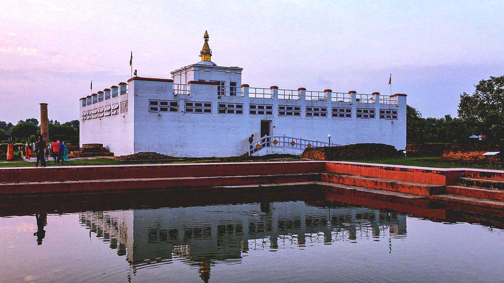
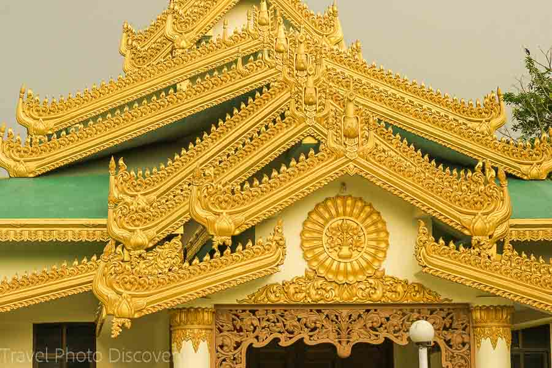
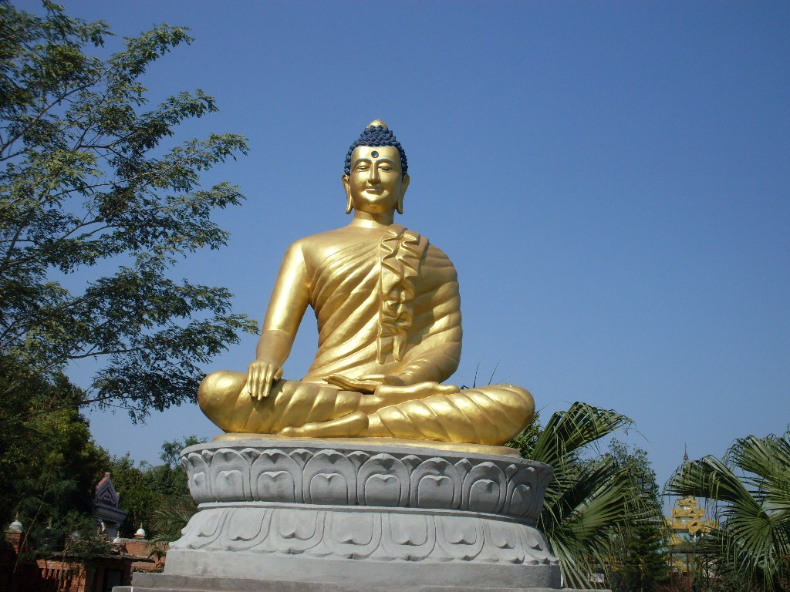
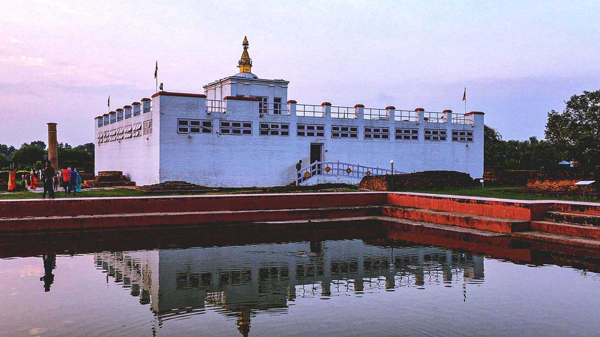
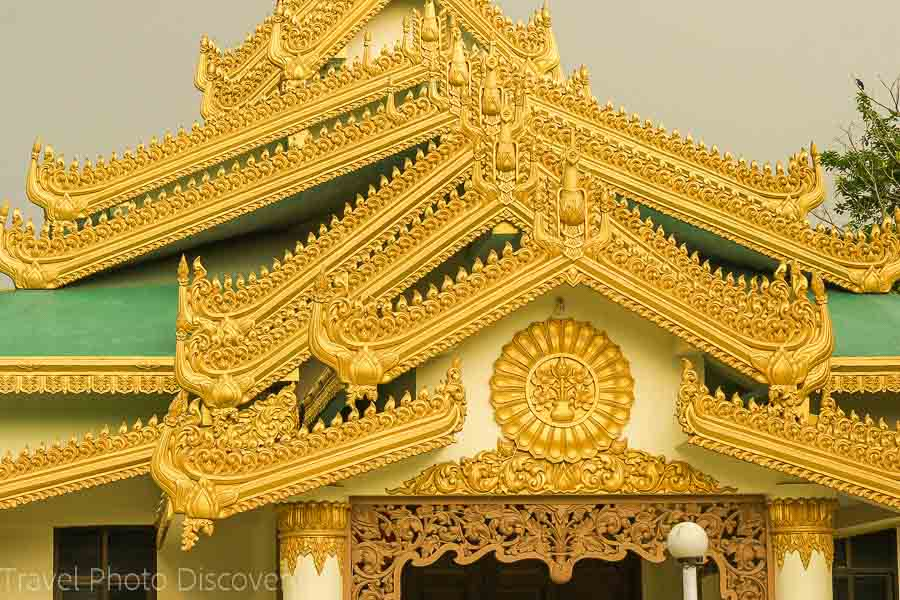
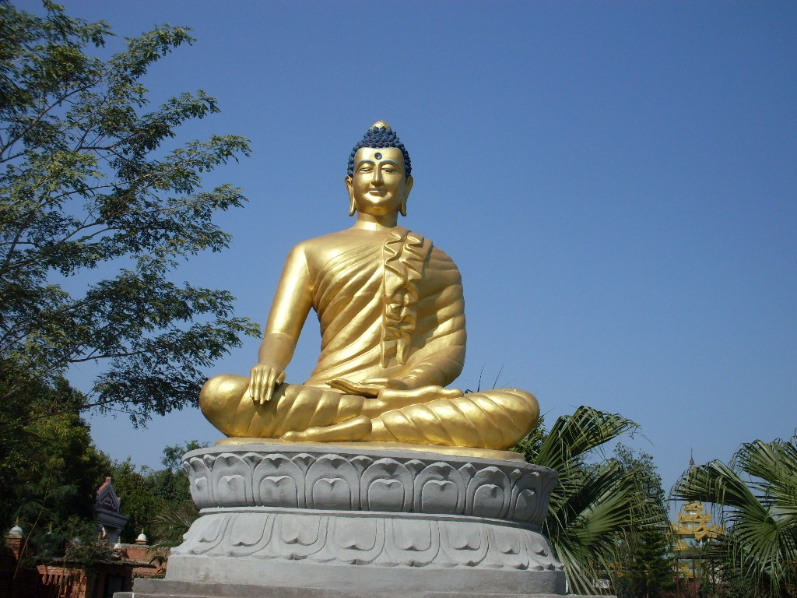

lumbini have greate attraction for tourism. historical building, temples like mayadevi, ashoka piller. Moreover some rivers, lake, temple built by countries like china, thailand, korea, india are there. the main attraction of lumbini is mayadevi temple where budhha was born. Besides, there lots of monasteries and statue built by different countries.


 




